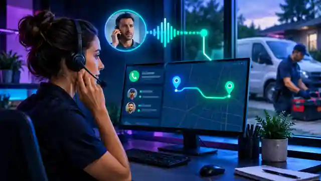

Stop Losing Emergency Jobs: How AI Receptionists Help HVAC and Plumbing Companies Capture More Calls
At 9:18 p.m., an air conditioner stops cooling. At 5:52 a.m., a tenant notices water spreading across a ceiling. For an HVAC or plumbing business, calls like these can arrive while the office is closed, technicians are driving, or the on-call person is already handling another job. The challenge is not simply whether someone answers. It is whether the caller receives a clear next step and the request reaches the right person.
A configured AI receptionist can help capture caller details and route requests using business-approved rules. It is not a technician, emergency dispatcher, or guarantee of a job. The strongest setup defines what the system may collect, what it must escalate, and how the business confirms the next step.
Why urgent service calls slip through
Home-service phone coverage is difficult to maintain consistently. A technician may be on a roof, under a sink, driving between jobs, or speaking with a customer. During a heat wave, cold snap, or heavy rain, several people may call close together. Outside business hours, the owner or a small on-call rotation may be the only available contact.
Voicemail records a message, but it does not explain the next step or apply the company's call rules. A caller may try another contractor, call again, or wait without knowing whether anyone received the request. The business then starts the day with an unclear queue and incomplete information.
The goal is not to label every uncomfortable home as an emergency. It is to capture the facts, apply a written priority policy, and give a human decision-maker a usable handoff.
What an AI receptionist can—and cannot—do
When the phone routing and agent configuration are appropriate, an AI receptionist can provide a consistent first point of contact. It can greet callers, explain approved business information, collect contact and service details, identify the reason for the call in the caller's own words, and follow configured transfer or callback rules.
That does not mean it can diagnose a failed furnace, determine whether a pipe is safe, decide which technician should be dispatched, or promise an arrival time. A transfer attempt is not a completed handoff. An appointment request is not a confirmed booking. If calendar, CRM, or dispatch software is involved, the exact connection and workflow must be configured and tested before anyone describes it as active.
Build intake around the trade
For HVAC calls
Use a short intake path that records the caller's name, callback number, service address, and whether the caller is a new or existing customer. Ask the caller to describe the issue in their own words—for example, no cooling, no heat, unusual noise, or a maintenance request. If the business needs it, collect the equipment type or the time the problem began. Do not turn the conversation into remote troubleshooting or ask the caller to open equipment, handle wiring, or attempt a repair.
Make service-area boundaries explicit. If the address is outside the company's coverage, the agent should say so plainly rather than implying that a technician will be sent.
For plumbing calls
Capture the service address, callback number, the fixture or area involved, and the issue as the caller describes it—such as an active leak, blocked drain, water-heater concern, or installation request. Ask only the questions the business has approved for intake. Do not diagnose the source of a leak, tell a caller how to operate unfamiliar equipment, or promise that a problem can be fixed during a particular visit.
For both trades, distinguish a new service inquiry from an existing job, warranty question, estimate follow-up, property-manager request, or supplier call. These categories often need different destinations.
Keep life-safety concerns ahead of lead capture
Some calls should not continue through an ordinary service-intake script. A caller who reports smelling or hearing a gas leak should not be kept on the line to answer routine questions. The U.S. Consumer Product Safety Commission says to leave the home immediately, avoid operating electronics such as lights or phones before leaving, and contact local gas authorities from outside. If a carbon-monoxide alarm sounds, CPSC says to get outside immediately and then call 911. See the CPSC's May 27, 2026 safety guidance and its carbon-monoxide fact sheet.
Write a safety-escalation procedure with qualified professionals before configuring the agent. It should prioritize the appropriate emergency or utility contact, avoid remote diagnosis, and never imply that booking an HVAC or plumbing visit replaces emergency help. Test this path with the same care as the ordinary call flow.
Design a human handoff that actually works
Before launch, document the primary on-call contact, backup contact, transfer hours, approved callback window, and what happens when nobody answers. Keep the list current when technicians change shifts. If the transfer fails, the caller should hear an honest fallback and the business should receive a callback request with the details already collected.
- Set ownership: Name the person responsible for reviewing each urgent request and the person who covers when they are unavailable.
- Set boundaries: Define what the AI may answer, what requires a person, and what must go to emergency services or a utility.
- Set expectations: Use only response windows the business can support. Do not promise an immediate call, technician arrival, or repair unless the responsible person has confirmed it.
- Test failure paths: Call from an outside phone, let the transfer ring unanswered, test after-hours routing, and verify that the callback details reach the intended person.
Measure call capture without overstating results
Review a small set of operational measures each week:
- Inbound calls received and the share answered by the configured receptionist.
- Calls with complete names, callback numbers, service addresses, and issue descriptions.
- Transfers attempted versus transfers actually connected to a person.
- Callback requests still waiting for an owner, including their age.
- After-hours requests, repeat callers, and calls that were routed to the wrong destination.
- Appointments confirmed by the authoritative scheduling system, kept separate from appointment requests.
Listen to a sample of calls and correct the script when callers repeat information, the agent misclassifies a request, or the handoff is unclear. The Federal Trade Commission's small-business advertising guidance explains that objective claims need evidence. Use your own verified call records before making public claims about leads, bookings, response times, or revenue.
Frequently asked questions
Can an AI receptionist dispatch an HVAC or plumbing technician?
It can follow configured routing or notification rules, but a qualified person should make dispatch decisions unless a specific dispatch integration and authorization have been implemented and tested. Do not describe a transfer or request as a confirmed dispatch.
Can it answer calls after hours?
It may provide after-hours coverage when the phone routing, service configuration, and escalation contacts are set up for that purpose. Confirm the exact hours, call capacity, and fallback behavior with the provider.
What information should it collect from an emergency caller?
For an ordinary service request, collect only the details needed for a safe human handoff: caller name, callback number, service address, and a brief description in the caller's words. Safety concerns should follow the business's approved emergency procedure first.
Will it guarantee more emergency jobs?
No. Answering and capturing a request can improve the opportunity to follow up, but a job still depends on service area, availability, customer choice, pricing, and the business's ability to respond. Measure verified outcomes rather than promising a conversion result.
Can it book directly into my field-service system?
That depends on the specific platform, account permissions, integration, and workflow. Ask which actions are supported, what data is written, and how the connection was tested. A requested integration should not be presented as live.
Turn more calls into clear next steps
Reliable emergency-call handling is a process: capture the request, protect the caller from unsafe advice, route it to the right person, and confirm what happens next. An AI receptionist can support that process when its limits and escalation rules are designed around the real operation.
Star69AI is a managed AI receptionist service, not a DIY phone platform. Our Crew handles configuration, customization, testing, and ongoing maintenance around the business's approved call flow. If your HVAC or plumbing staff are often in the field when customers call, use Initiate Contact to discuss your coverage needs and request a tailored review.
Give every service call a clear next step
Our Crew configures and maintains a managed AI receptionist around your business hours, service area, and escalation rules.
Initiate Contact ↗Communications, Evolved.
Editorial disclosure: This article provides general business-operations information, not HVAC, plumbing, safety, emergency-response, or legal advice. Follow local emergency guidance and company procedures; technical and dispatch decisions belong with appropriately qualified professionals. No customer results, job volume, response time, or performance guarantee is implied.